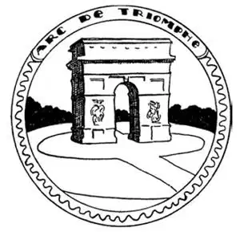
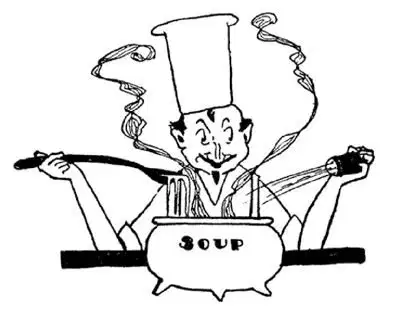
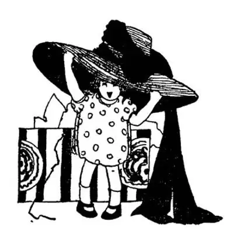

29
Parlez-vous Français? (continued
)
你讲法语吗？（续）

THERE are two French words which I know you know, even if you don’ speak French. One is “Boulevard” and the other is “Avenue.” You have probably always thought they were English words, but they are both French words. Paris has many Boulevards and one of the finest Avenues in the World. This Avenue is lined with trees and runs directly toward the setting sun, and was thought beautiful enough to be a street in Paradise, so it was called the Champs-Elysées, which means “The Fields of Paradise.”
In London a square is called a Circus, but in Paris it is called a Place, as if spelled “Plass.” The most beautiful Place in Paris is the Place de la Concorde. In the center of this Place is a monument made of one single tall stone standing on end. It is called Cleopatra’s Needle. The Place de la Concorde is at one end of the Champs-Elysées and at the other end is a beautiful arch like a huge gateway across the avenue. It is called “L’Arc de Triomphe,” which it is easy to guess means The Arch of Triumph. No automobile nor carriage may pass through this Arch of Triumph, however, for underneath it in the pavement is the tomb of the French Unknown Soldier, and from this tomb a flame flickers day and night—a flame to be kept burning forever to the memory of the brave Frenchmen who died in the World Wars.

Underneath the Arch of Triumph is the tomb of the French Unknown Soldier
凯旋门下面是法国无名战士的陵墓
The French people love beautiful things. They love beautiful pictures and beautiful sculpture and beautiful buildings, and they know how to make them; so young men and women from our country and from other countries go to Paris to learn from the French how to make beautiful things—to become painters and sculptors and architects.
But the French love beauty in everyday things as well—in such everyday things as hats and clothes and cooking and manners. French hats and French clothes and French cooking and French manners are famous. Strange to say, the most famous French dressmakers are men. Also, strange to say, the most famous French cooks are men too. We call them “chefs.” Our dressmakers go to Paris to study and copy the fashion in clothes and the style in hats, and we get French chefs for our finest hotels and restaurants. Perhaps you have noticed that the bill of fare in many of our restaurants is printed in French. That is because our cooks copy not only the way the French cook but the names of the dishes they cook. The French can make delicious soup out of a piece of bread and a bone. In America soup is just soup, but in France soup is called potage or consommé instead of soup—it sounds better, and anything that sounds better you expect will taste better, too, and it usually does.

The most famous French cooks are men
最有名的法国厨师都是男的
When we eat our meals we almost always do so indoors, where we can see no one else and no one else can see us. But the French often eat outof- doors, on the sidewalk or overlooking the sidewalk, where they can see every one and every one can see them, and that’s where many of their most famous restaurants are placed.
The French drink a great deal of wine with their meals, much as we drink milk or coffee or tea, and there are many great farms in different parts of France where they raise grapes from which they make the wine. These farms are vineyards—called “vinyards.”
Cloth is made out of several things—linen, cotton, wool, and silk; linen, cotton, and wool are chiefly for use, but silk is chiefly for beauty. In Ireland cloth is made out of linen, in England cloth is made out of cotton and wool, but in France cloth is made out of silk for beauty’s sake. Linen and cotton are made from plants, wool is made from sheep, but silk is made from a little caterpillar. We call this caterpillar a silkworm, but he is not really a worm at all. A worm is born, lives, and dies always a worm, but a caterpillar turns into a beautiful moth or butterfly if let alone. Most caterpillars, however, we try to kill, for they eat the leaves of trees and other green things. But silkworms are so valuable that people feed them leaves and raise them as our farmers raise chickens. The silk caterpillar likes a special kind of leaf—the leaves of the mulberry-tree. So in the valley of a river in France called the Rhône the French people grow mulberry-trees—not for the mulberries but for the leaves, which they gather and feed to the silkworms.
After the silk caterpillar has eaten, he spins a fine thread of silk almost a quarter of a mile long out of his own body, as a spider spins a spider web out of his own body. The silk caterpillar winds himself up in this thread as he spins it round and round and round until he is completely covered up and looks in his cover of silk thread something like a peanut. Then he goes to sleep inside, and if he waked up he would come out a moth; but they don’t let him wake up. They boil him while he is asleep, till he is soft, and then they un wind the thread which he has wound round himself and use it to make silk cloth, silk stockings, silk ribbons, and all the silk things that women love. On the River Rhône is the greatest place in Europe for making silk. It is called Lyons.
The River Rhône flows south into a gulf called the Gulf of Lyons, which is a part of the Mediterranean Sea. The chief city on the Gulf of Lyons is Marseilles. It is the next largest city to Paris, but it was a city long before there was any Paris, for it was a port for ships that sailed the sea long, long ago, and it still is one of the great ports for ships. It is near, but not quite at, the mouth of the Rhône.
Another thing that women love is perfume—sweet perfume! The French are famous for making perfume from flowers and from sweet grasses and even from weeds. French perfume is very expensive, because it often takes a whole field of flowers to make but a very few bottles of perfume. A dollar for a thimbleful! It always seemed wonderful to me that both flowers and their perfume come out of the ground—that the beautiful colors and sweet perfume are both made from mud!
French farmers raise other things, of course, besides grapes and silkworms and flowers for perfume. They raise many of the same things that our own farmers raise. Most of the people in France are farmers, but they don’t live in farm-houses on their farms; they live in houses in a village and walk out and back to their farms, which often are a long way off.

Ladies go to Paris to buy hats and clothes
女士们到巴黎去购买帽子和服装
When I was five years old I was given a penny bank, “to save for my old age.” When, at the age of twelve, I had a hundred dollars, I felt like a millionaire. The French are very saving. Even a man who earns very little saves some of that little, so that even poor people have money saved up for their old age when they can no longer work.
A girl saves her money so that when she marries she will have enough to buy furniture and perhaps a house or even more. This is called her “dot.” Sometimes her father and mother give it to her, and sometimes the girl earns it herself; sometimes her “dot” is only a few hundred dollars, sometimes it is thousands of dollars, but seldom can a girl marry who hasn’t some “dot.” “And they lived happily ever afterward.”
【中文阅读】
即使你不会说法语，但我知道有两个法语单词你肯定是认识的。一个是“Boulevard”（林荫大道），另一个是“Avenue”（大街）。你也许一直认为它们是英语单词，但两个都是法语单词。巴黎有很多林荫大道，还有一个世界上最优美的大街。大街两旁树木林立，直通向太阳落山的方向，人们认为这条街美丽得足以成为天堂里的街道，于是就叫它“香榭丽舍大街”，意思就是“天堂里的田园”。
在伦敦，广场叫做“Circus”（环形广场），但在巴黎它叫做“Place”（广场），念作“普拉斯”。巴黎最美丽的广场是协和广场。广场中央有一座纪念碑，由一整块高高的石头竖立而成。它叫克娄巴特拉方尖碑。协和广场位于香榭丽舍大街的一端，另一端是一个美丽的拱门，像个横跨在大街之上的巨大出入口叫做“凯旋门”，顾名思义很容易就知道它的意思是“胜利之门”。然而任何汽车或马车都不能从这个凯旋门通过，因为凯旋门下的路面下是法国无名战士的陵墓，墓地上不分昼夜燃烧着一束火焰——要让这束火焰永远燃烧下去。以此纪念在世界大战中牺牲的英勇的法国士兵。
法国人喜欢美的东西。他们喜欢美的绘画、美的雕塑和美的建筑，他们在这方面非常在行。因此美国和其他国家的年轻人都来到巴黎向法国人学习艺术创作——成为画家、雕刻家和建筑师。
但是法国人的爱美之心也表现在日常生活的各个方面——比如帽子、服装、烹调和礼仪这些方面。法国人的帽子、法国人的服装、法国人烹饪的美食和法国人的风度都闻名于世。说来很怪，法国最有名的服装设计师都是男的。同样说来奇怪的是，法国最有名的厨师也都是男的。我们称他们“大厨”。我们的服装设计师到巴黎学习和仿效他们服装的式样和帽子的风格，我们最好的酒店和餐馆也请来法国大厨。也许你已经注意到我们很多餐馆的菜单上面印的都是法语。那是因为我们的厨师不但学会法国人烹饪的方法，还照搬了他们的菜名。法国人用一块面包和一根骨头就能做出美味的汤。在美国，汤就是汤，但在法国汤叫做“浓汤”或者“清炖肉汤”，这些名字比“汤”就好听些，凡是名字更好听的食物你就会期待它味道更好，多数情况下也确实如此。
我们就餐几乎总在室内，我们看不到别人，别人也看不到我们。但法国人 经常在户外就餐，要么就在人行道上，要么在俯瞰人行道的地方，就餐的人能看到周围的人，周围的人也能看到他们，法国许多最著名的餐馆正是位于这样的地方。
法国人吃饭时喝很多葡萄酒，就像我们喝牛奶、咖啡或茶一样，在法国各地有很多种植葡萄的大农场，人们用葡萄酿造葡萄酒。这些农场叫做葡萄园。
布可以用好几种材料制成——亚麻、棉花、羊毛和蚕丝；亚麻、棉花和羊毛做的布比较实用，但蚕丝做的布主要适用于装饰。在爱尔兰布是用亚麻做的，在英国布是用棉花和羊毛做的，但在法国，为了美观的目的，布是用蚕丝做的。亚麻和棉花都从植物中获得，羊毛来自绵羊，但蚕丝取自一种小毛虫。我们把这种小毛虫叫做蚕，但它并不是真正的虫子。虫子从出生、长大到死始终是个虫子，但是如果让毛虫自然生长，它就会蜕变成一只美丽的飞蛾或者蝴蝶。然而，我们会设法把大多数的毛虫都消灭掉，因为它们吃树叶和其他绿色植物。但是蚕非常宝贵，人们喂树叶给它们吃，照料它们，就像农民养鸡一样。蚕幼虫喜欢一种特殊的树叶——桑树叶。法国一条河，叫罗讷河，在罗讷河山谷，法国人专门种植桑树——不是为了桑葚而是为了桑叶，他们用采摘来的桑叶养蚕。
当蚕幼虫吃了桑叶后，就像蜘蛛从自己体内吐出丝，织网一样，从自己的体内吐出一根很细的丝线，几乎有四分之一英里那么长。蚕幼虫一圈一圈又一圈吐丝的时候，也就把它自己缠绕在丝线里面，直到自己完全被裹住，形成的蚕茧看起来有点像个花生。然后它就在里面开始睡觉了，一觉醒过来，它就会变成一只蛾子，破茧而出；但人们不让它醒过来，在它还在熟睡的时候就把茧放到水里煮，直到变软，然后把缠绕在它身上的丝线解开，用蚕丝做成丝绸、丝袜、丝带以及所有女人喜欢的丝制品。在罗讷河上有一个欧洲最大的丝绸产地，叫做里昂。
罗讷河往南流入一个海湾，叫做里昂湾，它是地中海的一部分。里昂湾最重要的城市是马赛。马赛是仅次于巴黎的法国第二大的城市，但是历史比巴黎悠久，因为在很久很久以前它就是航海船只停泊的一个港口，现在仍然是港口之一。它靠近罗讷河河口，但并不正位于河口。
女人喜欢的另一个东西是香水——芬芳的香水！法国人以制造香水而闻名于世，他们用鲜花、香草、甚至野草制造香水。法国香水非常昂贵，因为生产很少几瓶香水往往就需要一整块田的鲜花。一美元只能买到一点点香水！在我看来，花和用花制出来的香水都来自于土地似乎太神奇了——美丽的颜色和芬芳的香水都产自于泥土！
当然，除了葡萄、蚕和用来制香水的鲜花之外，法国农民还种养其他东西。美国农民种植的很多东西，他们也同样种植。法国大部分人都是农民，但他们不住在农场的农舍里；他们住在乡村的房屋里，每天往返于家和农场之间，农场离家往往很远。
我5岁时得到一个储钱罐，用来“存钱养老”。到了12岁时，已经存了100美元，我觉得自己就像个百万富翁。法国人非常节俭，即使挣得很少，也要存起一部分，因此即使是穷人也把钱存入银行为将来老了不再能工作时做准备。
法国女孩也存钱，到结婚时，可用来买家具、房子甚至更多的东西。就是法国人所说的“嫁妆”。有时父母会给女儿一份嫁妆，有时是女孩自己挣钱置办；有时她的“嫁妆”只是几百美元，有时是几千，但很少有女孩子出嫁时是没有“嫁妆”的。带着这份嫁妆结婚，“从此以后过上了幸福的生活”。